Operating-System Structures
约 2298 个字 11 张图片 预计阅读时间 15 分钟
操作系统服务
从用户的角度来说，操作系统提供了
- 用户接口(或者说是用户界面UI)，包括命令行界面(CLI)以及图形化界面(GUI)
- 程序执行，操作系统可以将程序加载到内存中并且运行程序
- I/O 操作，一个运行的程序可能会需要进行 I/O 操作来与文件或者是 I/O 设备进行交互
- 文件系统管理，操作系统提供对文件的操作，使得用户程序可以查看文件内容，实现文件的创建删除以及修改，并且对文件的权限进行管理
- 信息交换，不同的进程之间可能需要实现信息的交换
- 错误检测，操作系统需要知道可能出现的错误情况
- 可能发生在 CPU 或者内存以及 I/O 设备等硬件上，也可能发生在用户程序这种软件上
- 操作系统需要对每一种错误类型进行针对性的正确处理来保证系统的持续正确运行
- 调试功能可以大大提高用户和程序员有效使用系统的能力
- 资源分配，当有多个进程同时运行时，操作系统需要对资源的分配进行合理的调度，有些资源需要特殊的调度策略，有些资源则采取请求释放的调度方式
- 计数，跟踪记录用户使用资源的情况
- 安全保护(Protection and security)，Protection 包括对操作系统的资源进行控制，Security 主要时防止来自外部的攻击，包括非法的权限、非法的 I/O 调用以及无效的访问(操作系统的安全性取决于其中最薄弱的一个环节)
用户接口
CLI
CLI 允许用户直接输入命令，这些命令由内核或者系统程序实现，具有多种实现方式
GUI
GUI 是图形化页面，相对更加用户友好。一般来说需要使用鼠标、键盘和显示器等外设，通过在图形化界面上的操作来实现对操作系统的调用。
大部分操作系统同时提供 CLI 和 GUI 的操作方式
系统调用
系统调用是操作系统提供的编程接口，通常通过更高级的 API 使用而不是直接使用系统调用
为什么使用 API 而不是直接使用系统调用?
一般来说，一个 API 是系统调用的集合，使用方便，如果直接使用系统调用会比较复杂
系统调用实现
每一个系统调用都有一个编号，操作系统维护一个系统调用的编号索引表。
系统调用在操作系统内核态执行，并且会返回系统调用后的状态以及可能的返回值。
使用者只需要了解如何去使用 API 以及操作系统执行之后的结果是怎样的，而不必要去关注具体的实现方式，这些系统调用的接口一般对使用者是透明的，暴露的是已经封装完成的 API 接口，而这些是通过运行时的库来实现的。
比如 c 语言中的 printf() 函数，这是已经封装好的库函数，在这个函数的内部调用了 write() 这一系统调用。
系统调用的参数传递
三种参数传递的方式
- 最简单的传递方式：通过寄存器传递参数，但是在有些情况下，需要传递的参数个数可能会大于寄存器的个数
- 将参数存储在内存中的块或者表中，然后将块的地址作为参数通过寄存器传递。
这是 Linux 和 Solaris 的采用方式。
- 由程序将参数推到栈上，再由操作系统从栈中推出参数。
第一种方式限制传递参数的个数，但是后面两种方式没有个数的限制
系统调用的类型
- Process control
- File management
- Device management
- Information maintenance (e.g. time, date)
- Communications
- Protection
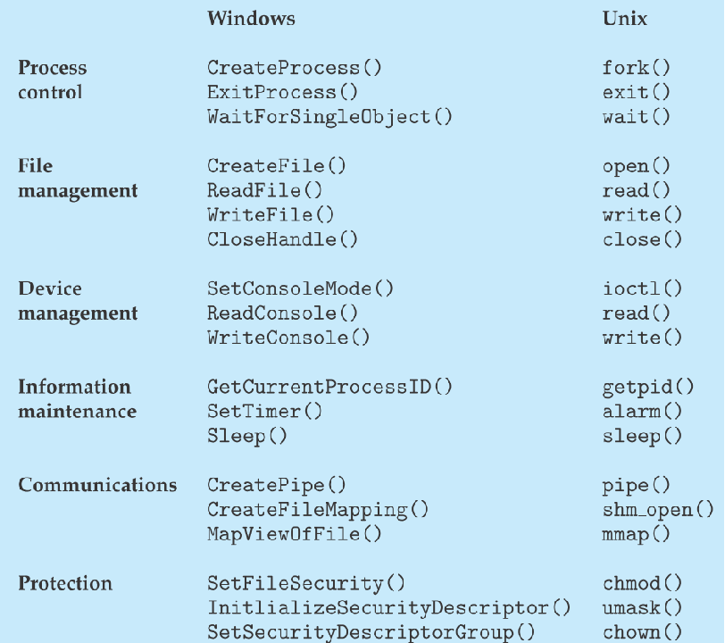
系统程序
系统程序提供了程序开发以及运行的便利环境，可以分为：
- File manipulation：文件管理，包括创建、删除、复制、重命名等操作
- Status information：维护一系列状态信息(日期、时间、可用内存空间、磁盘空间等)，还有些提供日志和调试信息，部分实现了注册表(用来存储和追踪配置信息)
- File modification：创造和修改文件的文本编辑器，可用于搜索文件内容或者执行文本转化
- Programming language support：编译器、汇编器、调试器以及可能提供的中断处理器
- Program loading and execution：Absolute loaders, relocatable loaders, linkage editors, and overlay-loaders, debugging systems for higher-level and machine language
- Communications：提供创造不同进程、用户以及电脑系统间虚拟连接的机制，允许用户间互相通信
- Application programs
操作系统的设计与实现
不同操作系统的内部结构间的差异可能很大。
操作系统的设计和实现基于实现的目标和规范，并且受硬件选择以及系统类型影响。
- 重要的分离原则
- Policy：策略(确定具体做什么事)
- Mechanism：机制(定义做事方式)
策略和机制的分离是一个非常重要的原则，这样允许在后续修改策略决定时具有最大的灵活性
举个栗子
一个策略与机制分离的典型例子是使用卡片来开门
- 策略决定什么样的人可以在什么时候进入什么样的门
- 机制决定具体的读卡器、遥控锁以及安全服务器
操作系统结构
简单结构
MS-DOS：用最小的空间来提供最多的功能。但是没有分成模块，虽然有一些结构，但是它的接口和功能层级没有很好的分离。
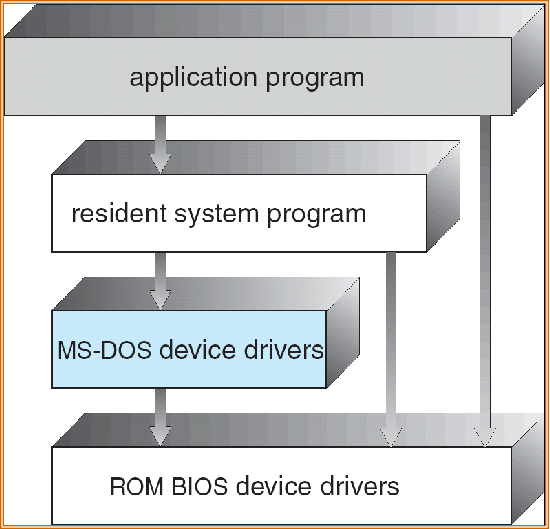
整体结构
UNIX：UNIX 操作系统由两个部分组成，包括系统程序和内核，其中内核包括所有处于系统调用接口以及物理硬件之间的东西，并且提供文件系统、CPU 调度、内存管理以及其他操作系统本身的函数。
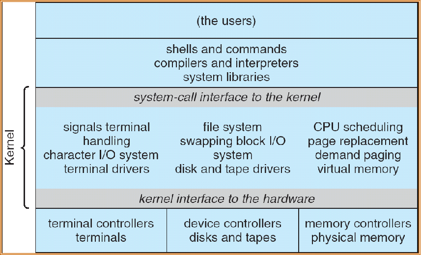
微内核
将尽可能多得内容从内核移动到用户空间中
- 优势
- 容易拓展
- 更容易将操作系统移植到新得架构中
- 更可靠(运行在内核态下的代码更少)
- 更加安全
- 劣势
- 用户空间到内核空间的通信的性能开销
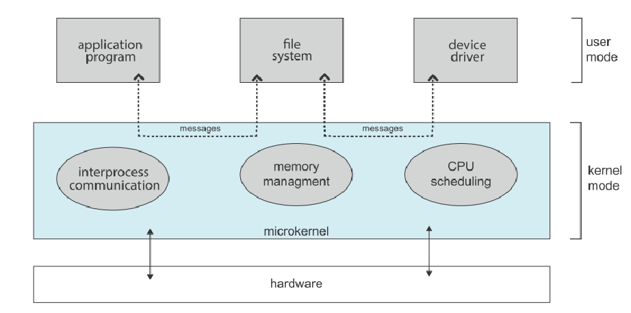
宏内核
- 优势：
- 效率很高
- 劣势：
- 安全性低
- 耦合度高导致维护困难
分层的方法
操作系统被分成很多层，每一层都基于它下面的层的实现。其中最底层是硬件，最顶层是用户接口。通过模块化，层的选择使得每个层只使用较低层的功能和服务。
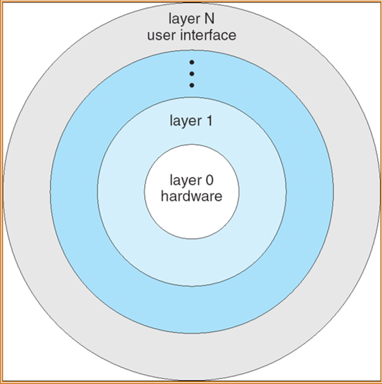
模块化
- 每个核心组件都是独立的
- 模块之间互相调用而不是传递消息
- 每个都可以根据需要在内核中加载
总的来说，模块化与层架构类似，但是使用起来更加灵活
Solaris 模块化方法
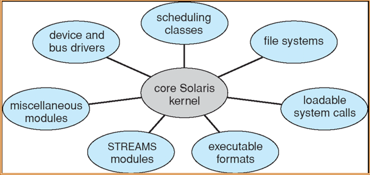
混合架构(Hybrid Structure)
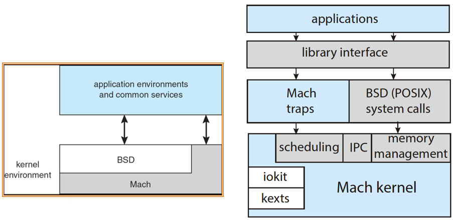
MacOS / iOS 架构
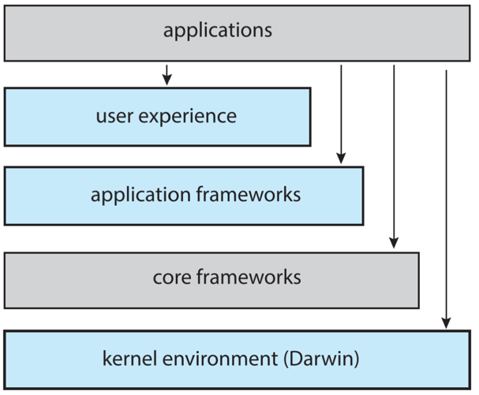
虚拟机
- 虚拟机采用分层方法实现其逻辑结构，它将硬件和操作系统内核视为硬件。
- 虚拟机提供与底层裸硬件相同的接口。
- 操作系统创建了多个进程的假象，每个进程在自己的处理器上使用自己的(虚拟)内存执行。
- 使用物理机的资源来创建虚拟机(比如通过 CPU 调度实现用户拥有自己的进程的现象)
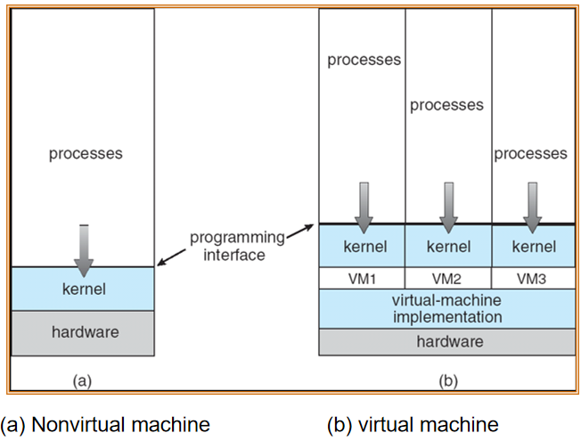
- 虚拟机概念提供了对系统资源的完整保护，因为每个虚拟机都与所有其他虚拟机隔离。然而，这种隔离不允许直接共享资源。
- 虚拟机系统是操作系统研究和开发的完美载体。系统开发是在虚拟机上完成的，而不是在物理机上，因此不会中断正常的系统操作。
- 虚拟机的概念很难实现，因为需要向底层机器提供精确的副本。(例如，虚拟用户模式和内核模式)
VMware 架构
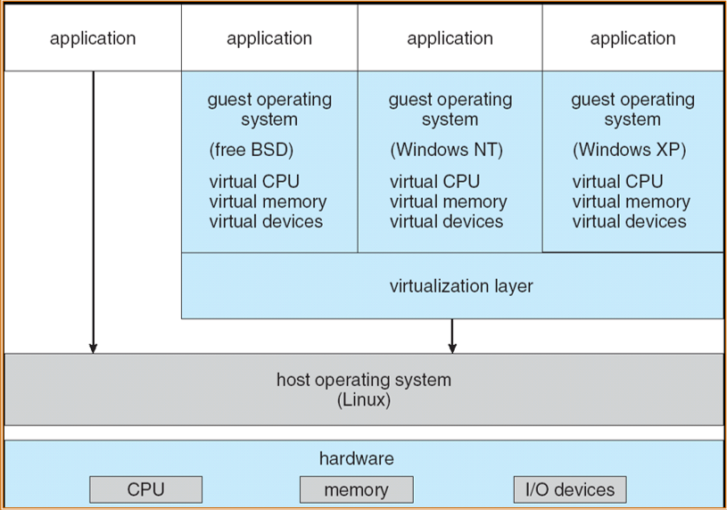
不同的技术
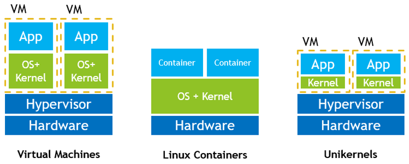
操作系统生成
- Booting：通过加载内核启动计算机
- Bootstrap program：存储在ROM中的代码，能够定位内核，将其加载到内存中，并开始执行
System Boot
Bootstrap program 将内核装载到内存中并且启动内核。当系统上的电源初始化的时候，执行从固定内存地址开始的指令(使用硬件来保存初始化启动代码)。
有些时候启动需要两步，需要先从 boot block 中获取 bootstrap loader，然后再进行内核的加载。